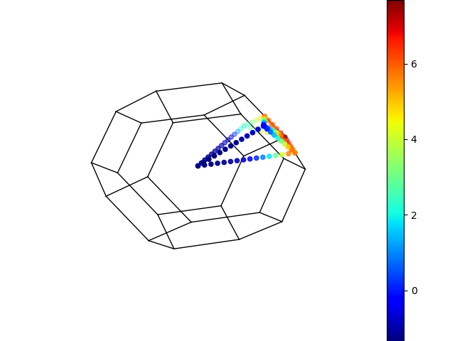

Note
Click here to download the full example code
e-bands scatter3d¶
This example shows how to plot a particular “band” in 3D with matplotlib scatter3D. The color of the point gives the energy of the state wrt to the Fermi level.
from abipy import abilab
import abipy.data as abidata
# Open the GSR file and extract the band structure.
with abilab.abiopen(abidata.ref_file("ni_kpath_GSR.nc")) as ncfile:
ncfile.ebands.plot_scatter3d(band=9, spin=0)
Total running time of the script: ( 0 minutes 1.219 seconds)